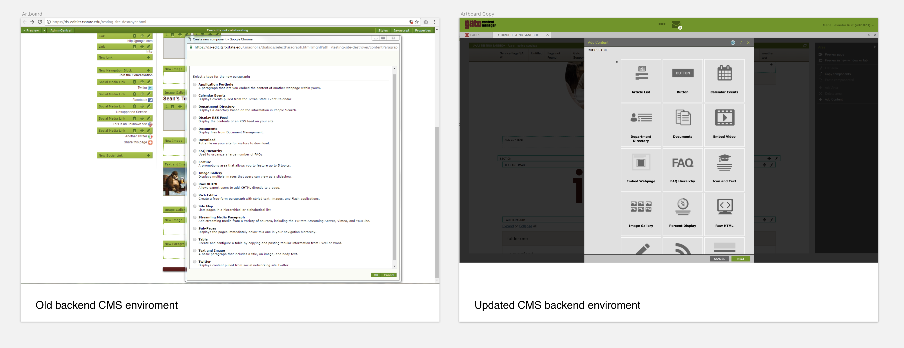
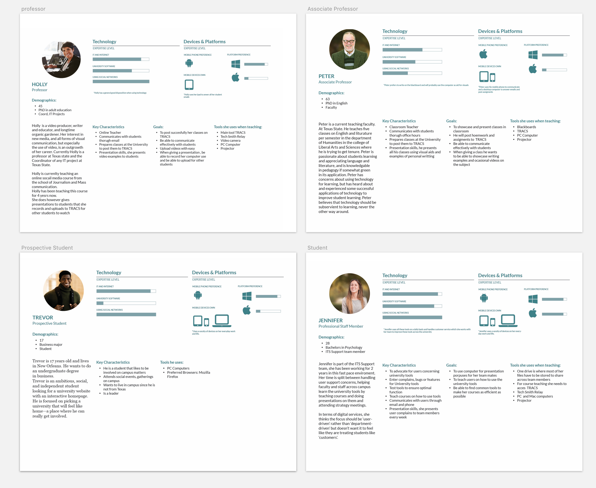
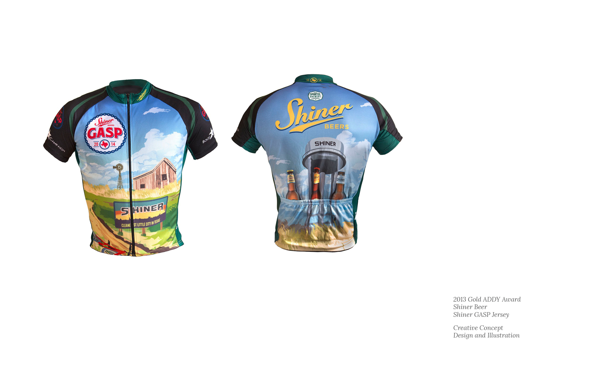

Other Work
Some past work or recurrent projects
Some of the projects I am part of can be small and recurrent, such as User testing for current applications, or digital products to enhance their functionality. This are some of them.
CMS Backend interface redesign
Design work on the backend of Texas State's CMS. When a new function is implemented I am in charge of making a user interface environment where any user (from low to high experience) can create a web page.
In 2015 the Texas State University CMS went on a major upgrade to redesign the front and backend of the Universities websites. I was in charge of redesigning the backend environment, creating a more modern and usable interface.
Currently at Texas State they have about 1000 web editors. These users have different web technical skills, and this interface accommodates any user to help them create web pages.
The redesign included a comprehensive study of the current content types that users can utilize and create dialogs for inputting content, that are useful and easy to understand
Personas
A Personas in user-centered design is a comprehensive profile of character that represents an user type inside your organization that might use your site, brand, or product. The use of personas can help map out functionality and possible journeys an user may take while using your product.For the department of IT at Texas State University I developed a set of personas that would help me in the various projects I led, by given these characters technological knowledge, a personality, and devices they may use we were able to see better from the users perspective on how they would interact with a product.
Illustration work
Another project that I won an ADDY Award for, was my illustration on a Shiner shirt. Shiner hosts a bike race every year and when working with a local San Antonio marketing firm I created this shirt that won a Gold ADDY Award
